Stappenplan nieuwe ftp via F5
Inhoudsopgave
Inleiding,
In dit document vind je een stappenplan/checklist om een nieuwe FTP-site via de F5 BIGIP te configureren.
1. F5 - BIGIP
1.1 Certificaat installeren
Onder System \ Certificate Management kunnen SSL-certificaten
geïmporteerd worden.
Bijvoorbeeld Wildcard-Montapacking-nl-2021 en ook de bijbehorende chain
(intermediate en root in een cert-bestand achter elkaar geplakt).
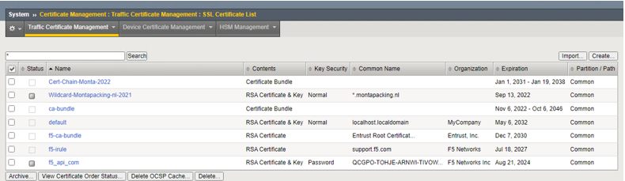
Klik op Import
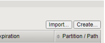
Selecteer het Import Type (bij een pfx kies je voor PKCS 12, bij een chain kies je voor Certificate).
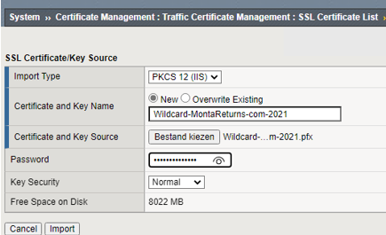
Vul de naam in,
Selecteer het bestand en type het daarbij behorende wachtwoord in.
Druk hierna op "Import".
1.2 Aanmaken FTP-profiel
Onder "Local traffic \ Profiles \ Services \ FTP \" staan de FTP-profielen.
Per FTP-site maken we hier een FTP-profiel.
Kies in het overzicht voor "create",

Vul de Name in, kies het "Parent Profile" FTP-Generic.
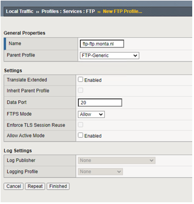
- Klik onderaan het formulier op "Finished"

1.3 Aanmaken SSL-Server profiel
Onder "Local traffic \ Profiles \ SSL \" staan de SSL-profielen.
Kies hier voor Server om een server-certificaat aan te maken.
- Kies in het overzicht voor "create",

- Vul de Name in, kies het "Parent Profile" en zet de "configuration" op "Advanced",
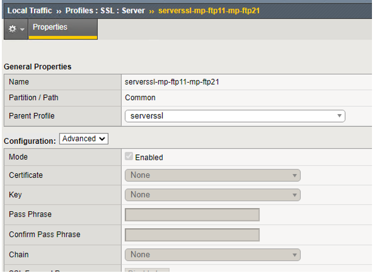
- Klik onderaan het formulier op "Finished"

- Maak nu ook eenzelfde profiel met "-monitor" achter de naam voor de monitor van deze website.
1.4 Aanmaken SSL-Client profiel
Onder "Local traffic \ Profiles \ SSL \" staan de SSL-profielen.
Kies hier voor Client om een client-certificaat aan te maken.
- Kies in het overzicht voor "create",

- Vul de Name in en kies het Parent Profile (Dit is mede afhankelijk van het certificaat wat je wilt gebruiken).
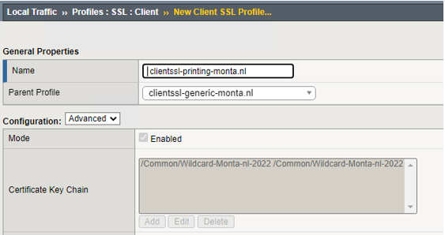
- Klik onderaan het formulier op "Finished"
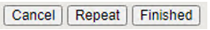
1.5 Aanmaken Monitor
Per website dient er een monitor aangemaakt te worden op ftp.
Ook dienen we het serverssl-profiel uit 1.2 hier weer in te stellen.
Ga naar "Local traffic \ Monitors"
Klik in het overzicht op "create"
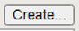
- Vul de Name. Description in en kies bij "Type" voor FTP,
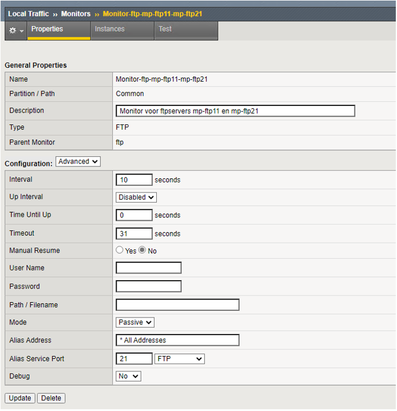
- Configuration : Advanced
- Mode: Port
- Alias Service Port: FTP
Klik onderaan het formulier op "Finished"

1.6 Aanmaken Nodes
Alle te gebruiken webservers dienen eenmaal aangemaakt te worden als
Node
Hierin geven we het ip-adres op van we lan-webserver.
- Ga naar "Local traffic \ Nodes \ Node List ",
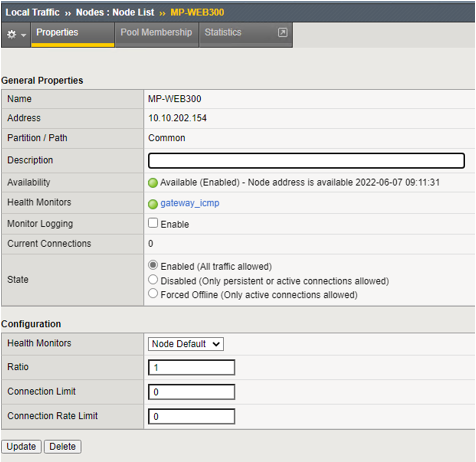
1.7 Aanmaken Pools
Om Blue-Green in te richten hebben we voor elke website 2 pools nodig.
Ga naar "Local traffic \ Pools \ Pool List ",
Klik in het overzicht op "create"

- Vul de Name en Description in en selecteer de juiste "Health Monitor"
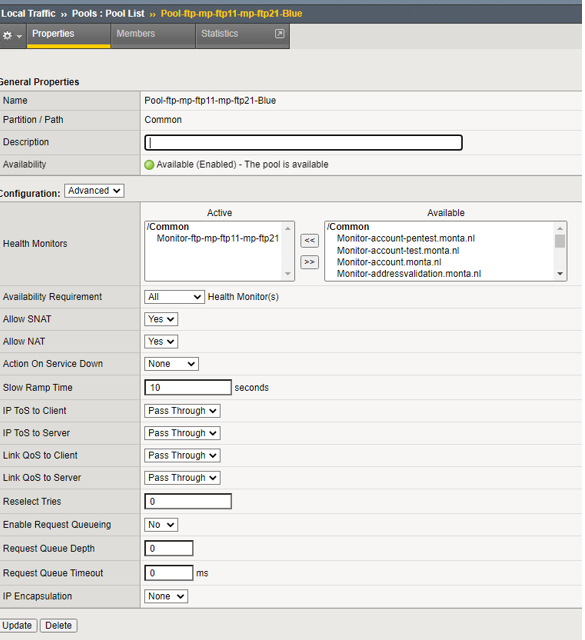
- Vul bij "Load Balancing Method" Ratio (Member) in.
- Kies bij Priority Group Activation “Less Then” en vul “1” in.
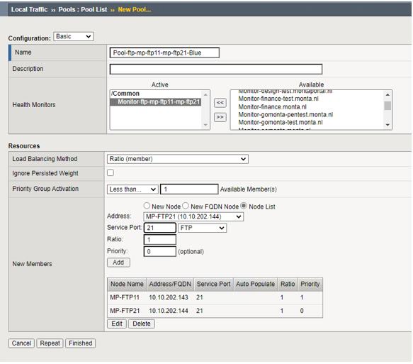
Klik nu bij "New Members" op de radio-button "Node List" en selecteer hier de eerste Node voor deze pool (in dit voorbeeld is dat de MP-WFTP11).
Kies bij "Service Port" voor FTP.
Vul bij Ratio "1" in.
Vul voor de primaire ftp-server bij Priority "1" in.
Vul voor de standby ftp-server bij Priority "0" in.
Klik hier op "ADD".
Doe dit ook voor de andere ftpservers in deze pool (in dit voorbeeld is dat de MP-FTP21)
Het resultaat ziet er dan zo uit.
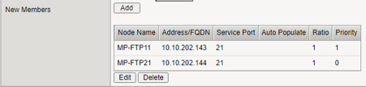
De Pool is nu klaar.
Klik daarna op "Finished"

1.8 Aanmaken Virtual Server
Ga naar "Local traffic \ Virtual Servers \ Virtual Server List ",
Klik in het overzicht op "create"

- Vul de Name in geef bij "Destination Address /Mask" het ip-adres op waarop de F5 moet luisteren in het DMZ-WEB-vlan,
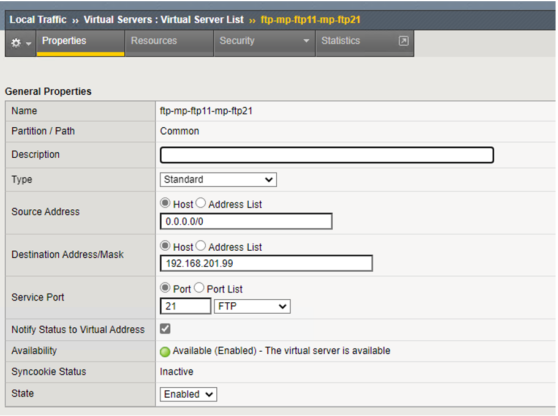
Selecteer bij "Service Port" FTP en zet de configuration op Advanced.
Selecteer bij "Protocol Profle (client)" de "tcp" en bij "FTP Profile" het gewenste FTP_profiel.
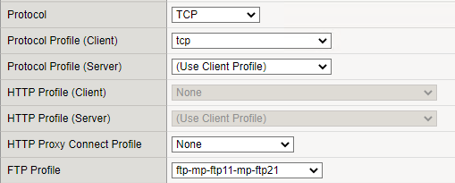
- Selecteer bij "SSL Profile (Client)"het gewenste client-profiel van de website. En selecteer bij "SSL Profile (Server) het gewenste sslserver profiel. (dit is alleen nodig als we gebruik willen maken van beveiligde ftp, anders laten we deze 2 velden leeg).
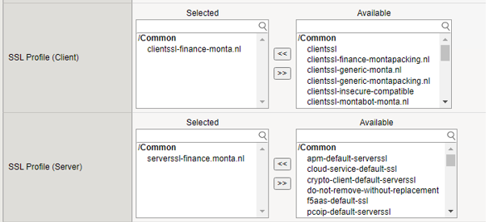
- Selecteer bij "VLAN and Tunnel Traffic" Enabled on, en selecteer bij de VLAN's DMZ-WEB
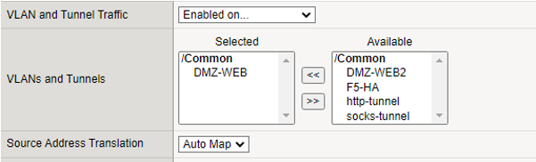
Zet de "Source Address Translation" op Auto Map.
Zorg dat het vinkje bij "Address translation" aan staat.
Het vinkje bij "Port translation" moet uit staan.
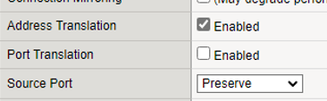
Selecteer onder het kopje "Resources" bij Default Pool de gewenste pool.
Klik daarna op "Finished"

1.9 Aanpassen Virtual Address
- Ga naar "Local traffic \ Virtual Servers \ Virtual Address List",
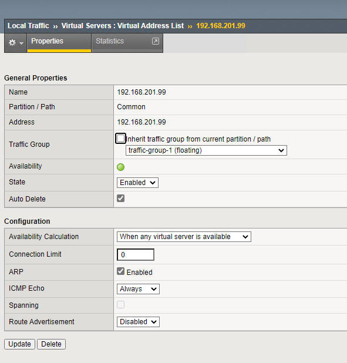
Hier kun je eventueel nog wat zaken aapassen maar meestal staat het standaard goed.